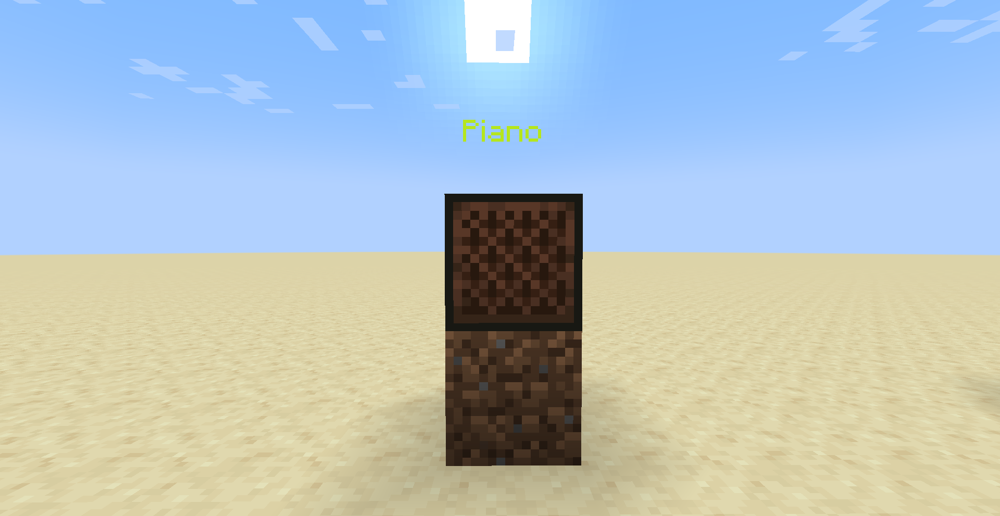
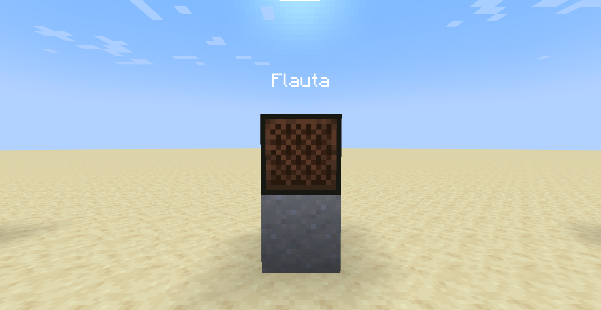
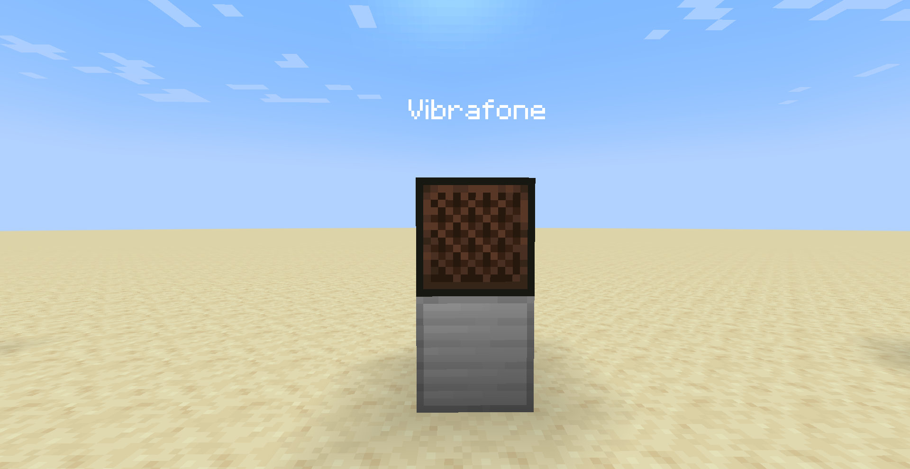

Blocos musicais
Um bloco musical é um bloco que reproduz sons quando energizado com redstone. Ao apertar nesse bloco, o tom aumenta, são 24 notas musicais e 16 instrumentos. Ao colocar um bloco em baixo desse bloco, o instrumento tocado muda, também ao colocar uma cabeça de mob em cima desse bloco, sairá som desse mob. Veja abaixo os sons de cada instrumento:




